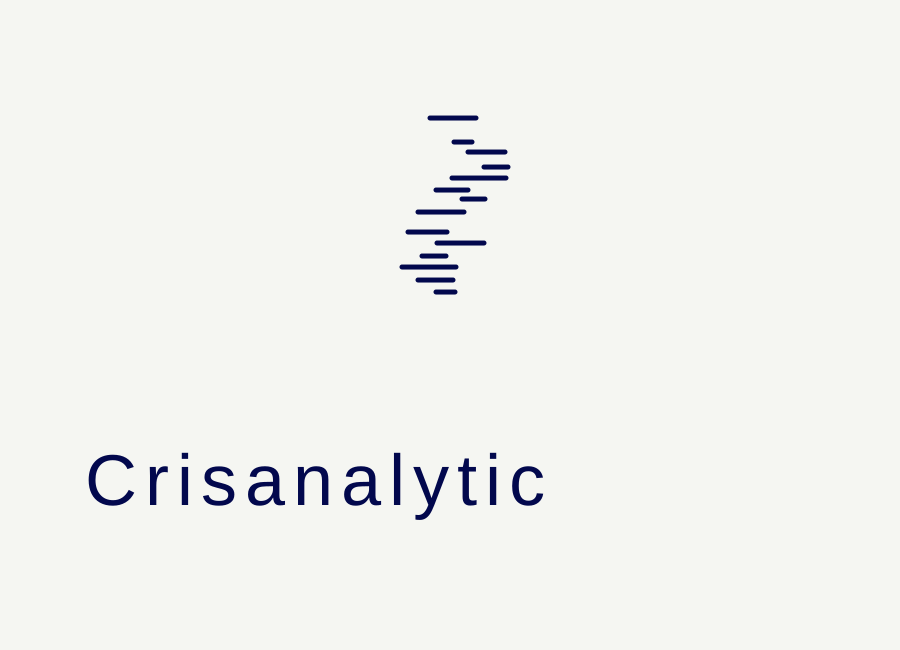

Lo que conviene traer a la conversacion
Objetivo del proyecto, fuentes actuales, KPI principal y equipo que usara la solucion.
Contacto
Ideal para empresas que necesitan ordenar su capa de datos, construir dashboards utiles o lanzar un proyecto de machine learning con enfoque de negocio.
Siguiente paso
Objetivo del proyecto, fuentes actuales, KPI principal y equipo que usara la solucion.

Menos friccion inicial, mas claridad para estimar un proyecto realista.
Escribenos
Comparte tu contexto, tus fuentes actuales y el tipo de decision que quieres mejorar. Con eso podemos aterrizar el proyecto rapido.